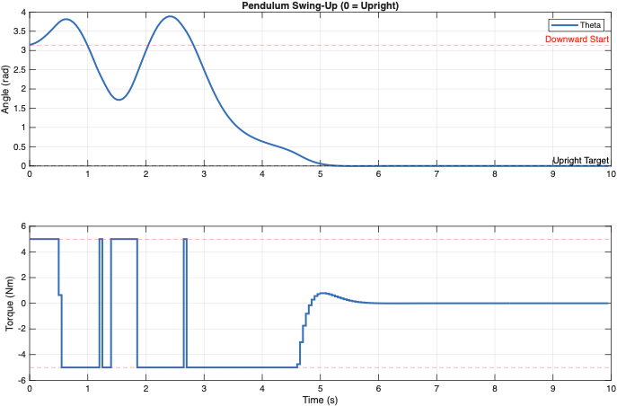

This chapter concludes the introduction to Model Predictive Control. We began with the Linear Quadratic Regulator (LQR), deriving the optimal feedback gain for unconstrained systems. We then introduced Model Predictive Control (MPC) to explicitly handle physical constraints (actuator saturation and safety limits). Finally, we bridged the "reality gap" by incorporating State Estimation and Disturbance Modelling, creating an architecture capable of offset-free tracking in the presence of noise and uncertainty.
The structure presented here—MPC + Estimator + Target Calculator—represents the standard architecture for modern industrial control. However, due to time constraints, we have focused on the practical application of these methods, necessarily omitting several advanced topics that define the forefront of control research. For students wishing to deepen their understanding, we outline the key areas and fundamental literature below.
Throughout this course, we relied on the Terminal Cost (\(x_N^\top P x_N\)) to encourage stability. While effective in practice, this does not mathematically guarantee stability for constrained systems.
Rigorous MPC theory relies on Lyapunov analysis. To prove stability, one must often include a Terminal Set Constraint (\(x_N \in \mathcal{X}_f\)) in the optimisation. This forces the state to land in a safe haven (a Positive Invariant Set, meaning that once the trajectory enters the terminal set, it remains inside) at the end of the horizon, ensuring recursive feasibility.
Fundamental Reference: Mayne, D. Q., Rawlings, J. B., Rao, C. V., & Scokaert, P. O. M. (2000). Survey: Constrained model predictive control: Stability and optimality. Automatica, 36(6), 789–814.
Robust MPC addresses the problem of guaranteeing constraint satisfaction when the system model is not perfect. The most practical framework is Tube MPC, which separates the control into a nominal trajectory planner and a feedback controller that keeps the real state within a bounded “tube” around the plan. This topic is developed in full detail — including the required set operations, constraint tightening, worked examples, and MATLAB implementations — in Chapter [chap:tube_mpc].
In previous sections, we relied heavily on linearising the system dynamics (\(x_{k+1} = Ax_k + Bu_k\)). While effective near an equilibrium point, this approach may fail for highly nonlinear systems, such as chemical reactors with Arrhenius kinetics or agile fighter jets performing aggressive manoeuvres.
Nonlinear MPC addresses this by solving the optimisation problem using the full nonlinear dynamic model directly. The general \(N\)-step finite horizon optimal control problem (OCP) solved at each time step \(t\) is formulated as:
\[\begin{align} \min_{{u}, {x}} \quad & J = \sum_{k=0}^{N-1} \ell(x_k, u_k) + V_f(x_N),& \nonumber\\ \text{subject to:} \quad & x_{0} = x(t),& \nonumber\\ & x_{k+1} = f(x_k, u_k), \quad &k=0,\dots,N-1, \label{eq:nl_dynamics} \\ & h(x_k, u_k) \leq 0, \quad &k=0,\dots,N-1, \nonumber \end{align}\]
where \(\ell(\cdot)\) is the stage cost, \(V_f(\cdot)\) is the terminal cost, and \(f(x_k, u_k)\) represents the nonlinear discretised system dynamics (often obtained via numerical integration, such as RK4).
Unlike linear MPC, which typically results in a Convex Quadratic Programme (QP) with a guaranteed unique global minimum, NMPC results in a Nonlinear Programme (NLP). Because the equality constraints in ([eq:nl_dynamics] ) are nonlinear, the feasible set is often non-convex. This introduces two major difficulties:
Local Minima: Solvers may converge to a local optimum rather than the global optimum, potentially resulting in suboptimal control performance.
Computational Cost: Solving an NLP is iteratively expensive (requiring the computation of Jacobians and Hessians at every step). Since the optimisation must complete within the sampling time \(T_s\), real-time feasibility is a critical bottleneck.
Fundamental Reference: Chen, H., & Allgöwer, F. (1998). A quasi-infinite horizon nonlinear model predictive control scheme with guaranteed stability. Automatica, 34(10), 1205–1217.
To solve these NLPs efficiently, modern NMPC implementations typically rely on Direct Methods, which transcribe the continuous control problem into a finite-dimensional NLP. Two popular approaches are:
Direct Single Shooting: Only the control inputs \(u_k\) are optimisation variables; states are eliminated by simulating the model forward. This results in small but dense matrices.
Direct Multiple Shooting: Both states \(x_k\) and controls \(u_k\) are treated as decision variables. This increases the problem size but preserves the sparsity structure and improves convergence stability, making it the preferred choice for stiff systems.
Standard solvers typically employ Sequential Quadratic Programming (SQP) or Interior Point Methods (IPM). In practice, engineers rely on specialised high-performance software frameworks rather than writing solvers from scratch:
CasADi: An open-source tool for algorithmic differentiation (AD) and optimisation. It is widely used in academia for prototyping NMPC controllers in MATLAB and Python, interfacing directly with NLP solvers like IPOPT.
ACADOS: A modular software package designed for embedded optimisation. It focuses on speed, utilising BLASFEO (linear algebra optimised for small matrices) to achieve microsecond-scale solution times suitable for robotics and automotive applications.
FORCES Pro: A commercial code-generation tool tailored for high-speed embedded NMPC, often used in the automotive and aerospace industries.
Case Study: Pendulum Swing-Up and Balance In this scenario, the pendulum starts in the stable downward position (\(\theta = \pi\)). The NMPC controller must "pump" energy into the system to swing it up and then stabilise it at the unstable upright equilibrium (\(\theta = 0\)).
Problem Formulation:
The objective is to minimise the quadratic cost function subject to the nonlinear dynamics and constraints. We define the state vector \(x = [\theta, \dot{\theta}]^\top = [x_1, x_2]^\top\) and input \(u\).
The optimisation problem is formulated as: \[\begin{align*} \min_{{x}, {u}} \quad & J = \sum_{k=0}^{N-1} (x_k^\top Q x_k + u_k^\top R u_k) + x_N^\top P x_N \\ \text{subject to:} & \begin{bmatrix} \dot{x}_1 \\[12pt] \dot{x}_2 \end{bmatrix} = \begin{bmatrix} x_2 \\[10pt] \dfrac{g}{L}\sin(x_1) + u \end{bmatrix}, \\ & -5 \leq u_k \leq 5, \\ & -2\pi \leq x_{1,k} \leq 2\pi \end{align*}\] where \(Q = \text{diag}(50, 0.1)\), \(R = 0.1\), and the terminal weight \(P = \text{diag}(1000, 10)\). The notation \(\text{RK4}(\cdot)\) denotes the explicit Runge-Kutta 4 integration of the continuous dynamics over the sampling interval \(\Delta t\).
Implementation Details:
The horizon is selected as \(N=40\) (\(2.0\)s) to allow the solver to plan the momentum build-up required for the swing-up manoeuvre. Figure 1.1 shows the simulation results.
clear; clc;
import casadi.*
opti = casadi.Opti();
N = 40; % Horizon (2.0s)
dt = 0.05; % Sampling time
X = opti.variable(2, N+1); % States x = [theta; theta_dot]
U = opti.variable(1, N); % Input u
x_init = opti.parameter(2, 1);
g = 9.81; L = 1;
f_continuous = @(x,u) [x(2); (g/L)*sin(x(1)) + u];
rk4_step = @(x,u,h) rk4_integrator(x, u, h, f_continuous);
opti.subject_to(X(:,1) == x_init);
objective = 0;
Q = diag([50, 0.1]); R = 0.1; P = diag([1000, 10]);
for k = 1:N
x_next = rk4_step(X(:,k), U(k), dt);
opti.subject_to(X(:,k+1) == x_next);
opti.subject_to(-5 <= U(k) <= 5);
opti.subject_to(-2*pi <= X(1,k) <= 2*pi);
objective = objective + X(:,k)'*Q*X(:,k) + U(k)'*R*U(k);
end
objective = objective + X(:,N+1)'*P*X(:,N+1);
opti.minimize(objective);
p_opts = struct('expand',true);
s_opts = struct('max_iter',2000, 'print_level',0, 'tol',1e-4);
opti.solver('ipopt', p_opts, s_opts);
M = opti.to_function('M', {x_init}, {U(:,1)});
T_sim = 200;
x_curr = [pi; 0]; % Start hanging DOWN (pi)
x_hist = zeros(2, T_sim);
u_hist = zeros(1, T_sim);
fprintf('Swinging up...\n');
for t = 1:T_sim
u_val = full(M(x_curr));
x_curr = full(rk4_step(x_curr, u_val, dt));
x_hist(:, t) = x_curr;
u_hist(t) = u_val;
end
function x_next = rk4_integrator(x, u, h, f)
k1 = f(x, u);
k2 = f(x + h/2 * k1, u);
k3 = f(x + h/2 * k2, u);
k4 = f(x + h * k3, u);
x_next = x + (h/6) * (k1 + 2*k2 + 2*k3 + k4);
end
In our examples, we used solvers such as MATLAB’s quadprog or the open-source solver IPOPT (accessed via CasADi or other interfaces), which are sufficient for offline simulations but insufficient for millisecond-level control on microcontrollers or DSPs. Deploying MPC on embedded hardware requires specialised techniques:
Explicit MPC (Multiparametric Programming) : For small systems, we can pre-calculate the solution offline. The result is a giant "lookup table" of linear gains. On the chip, the "optimisation" reduces to simple if-else checks to find the correct region, requiring microseconds to execute.
Code Generation: Tools like ACADO, CVXGEN, or OSQP generate highly optimised, library-free C-code specifically tailored to the structure of the MPC problem, allowing convex MPC to run on standard automotive ECUs.
Fundamental Reference: Bemporad, A., Morari, M., Dua, V., & Pistikopoulos, E. N. (2002). The explicit linear quadratic regulator for constrained systems. Automatica, 38(1), 3–20.
A major bottleneck in implementing MPC is obtaining an accurate mathematical model (\(A, B\) or \(f(x,u)\)). Deriving models from first principles (Newton’s laws, thermodynamics) is time-consuming and often fails to capture complex phenomena like aerodynamic drag or tire friction.
Modern research addresses this through three primary paradigms: Model Learning, where the dynamic equations are approximated from data; Direct Data-Driven Control, where the controller relies directly on raw data trajectories; and Iterative Learning, where the control policy itself is refined over repeated trials.
Instead of relying on a fixed physical model, we can approximate the system dynamics using function approximators . A popular approach is to combine a simple nominal model with a learned residual term: \[x_{k+1} = \underbrace{A x_k + B u_k}_{\text{Nominal Physics}} + \underbrace{g(x_k, u_k)}_{\text{Learned Residual}}\]
Gaussian Processes (GPs): GP-MPC models \(g(\cdot)\) as a distribution over functions. The key advantage is that a GP provides both a prediction mean \(\mu(x,u)\) and a variance \(\Sigma(x,u)\). This uncertainty quantification allows the controller to be cautious in unexplored regions of the state space (linking naturally to Robust MPC).
Neural Networks (NNs): Deep Neural Networks can approximate highly complex nonlinearities. However, embedding a non-convex NN directly into the OCP constraints makes the optimisation difficult.
Fundamental Reference: Kocijan, J., Murray-Smith, R., Rasmussen, C. E., & Girard, A. (2004). Gaussian process model based predictive control. Proceedings of the 2004 American Control Conference, pp. 2214–2219, vol.3, Boston, MA.
To avoid the computational burden of non-convex optimisation required by NNs, techniques like Dynamic Mode Decomposition (DMD) and the Koopman Operator seek to lift the nonlinear system into a higher-dimensional space where the dynamics behave linearly.
Given a discrete-time nonlinear system \(x_{k+1} = f(x_k)\), we define a set of observable functions \(\psi(x)\) (e.g., \([x, x^2, \sin(x), \dots]^\top\)). In this lifted space \(z = \psi(x)\), the evolution is linear: \[z_{k+1} = \mathcal{K} z_k\] where \(\mathcal{K}\) is the Koopman matrix identified from data. This allows the use of fast, convex Quadratic Programming (QP) solvers (standard Linear MPC tools) to control fundamentally nonlinear systems.
Fundamental Reference: Korda, M., & Mezić, I. (2018). Linear predictors for nonlinear dynamical systems: Koopman operator meets model predictive control. Automatica, 93, 149–160.
While the methods above use data to identify a model (indirect approach), Data-Enabled MPC (DeePC) skips the system identification step entirely. It relies on Willems’ Fundamental Lemma, which states that for a linear time-invariant system, any valid future trajectory can be represented as a linear combination of sufficiently rich past data trajectories.
To apply Willems’ Lemma, we construct a Hankel matrix from a single, sufficiently rich pre-recorded trajectory of inputs \(u^d\) and outputs \(y^d\) of length \(T_D\). We define a window length \(L = T_{ini} + N\), where \(T_{ini}\) is the length of past data required to fix the initial state, and \(N\) is the prediction horizon.
The data is arranged into Hankel matrices and partitioned explicitly into Past (\(p\)) and Future (\(f\)) blocks: \[\mathcal{H}(u^d) = \begin{bmatrix} u^d_0 & u^d_1 & \cdots & u^d_{T_D-L} \\ \vdots & \vdots & \ddots & \vdots \\ u^d_{T_{ini}-1} & u^d_{T_{ini}} & \cdots & u^d_{T_D-N-1} \\ \hline u^d_{T_{ini}} & u^d_{T_{ini}+1} & \cdots & u^d_{T_D-N} \\ \vdots & \vdots & \ddots & \vdots \\ u^d_{L-1} & u^d_{L} & \cdots & u^d_{T_D-1} \end{bmatrix} = \begin{bmatrix} U_p \\ \hline U_f \end{bmatrix}\] The output matrix \(\mathcal{H}(y^d)\) is partitioned identically into \(Y_p\) and \(Y_f\).
The optimisation variables are the future control sequence \(u\) and the operator vector \(g\), which selects a linear combination of the columns to construct a valid trajectory. The Optimal Control Problem is: \[\begin{align*} \min_{u, g, \sigma_y} \quad & \sum_{k=0}^{N-1} \|y_{f,k} - y_{ref}\|^2_Q + \|u_{f,k}\|^2_R + \lambda_g \|g\|^2 + \lambda_\sigma \|\sigma_y\|^2 \\ \text{subject to:} \quad & \begin{bmatrix} U_p \\ Y_p \\ \hline U_f \\ Y_f \end{bmatrix} g = \begin{bmatrix} u_{\text{ini}} \\ y_{\text{ini}} \\ \hline u \\ y_f \end{bmatrix} + \begin{bmatrix} 0 \\ \sigma_y \\ \hline 0 \\ 0 \end{bmatrix} \\ & u \in \mathbb{U}, \quad y_f \in \mathbb{Y} \end{align*}\] Here, \(u_{\text{ini}}\) and \(y_{\text{ini}}\) are the most recent \(T_{ini}\) measurements used to fix the initial condition. The slack variable \(\sigma_y\) accounts for measurement noise in the initial condition, and the regularisation \(\lambda_g \|g\|^2\) prevents overfitting to specific noisy data samples in the library.
Fundamental Reference: Coulson, J., Lygeros, J., & Dörfler, F. (2019). Data-Enabled Predictive Control: In the Shallows of the DeePC. European Control Conference (ECC), 307–312.
While the methods above focus on identifying the plant, Learning MPC focuses on improving performance for repetitive tasks (e.g., a robot arm picking up an object or a race car driving laps).
LMPC uses trajectories from previous successful iterations (indexed by \(j\)) to construct a safe set and a terminal cost. If the task is to minimise time or energy, the controller updates its terminal cost \(V_f(x)\) based on the realised cost of previous runs: \[V_f(x) = \min_{j < \text{current}} \{ J_{\text{realised}}^{(j)}(x) \}\] Mathematically, this guarantees recursive feasibility and non-increasing cost: the controller learns to perform at least as well as its best previous attempt, eventually converging to the optimal trajectory without needing a perfect model.
Fundamental Reference: Rosolia, U., & Borrelli, F. (2018). Learning Model Predictive Control for Iterative Tasks: A Data-Driven Control Framework. IEEE Transactions on Automatic Control, 63(9), 3018–3033.
(Nonlinear MPC: Formulating an NLP for a Pendulum) Consider a simple pendulum with continuous-time dynamics: \[\dot{\theta} = \omega, \qquad \dot{\omega} = \frac{g}{L}\sin(\theta) + u,\] where \(\theta\) is the angle from the upright position, \(\omega\) is the angular velocity, \(g = 9.81\;\text{m/s}^2\), \(L = 1\;\text{m}\), and \(u\) is the control torque.
Discretise the dynamics using a single Euler step with sampling time \(\Delta t = 0.05\;\text{s}\). Write out the resulting discrete-time equations \(x_{k+1} = f_d(x_k, u_k)\), where \(x = [\theta,\, \omega]^\top\).
Formulate the NMPC optimisation problem as a Nonlinear Programme (NLP) using the direct multiple shooting approach over a horizon \(N = 20\). Use cost matrices \(Q = \text{diag}(10,\, 0.1)\), \(R = 0.01\), and \(P = \text{diag}(100,\, 1)\). The input is constrained as \(|u_k| \leq 5\). Write out all decision variables, the objective function, and the full set of equality and inequality constraints.
Explain why this NLP is non-convex and discuss the practical consequences: what difficulties might a solver encounter, and what strategies can mitigate them?
(Linear MPC with Successive Linearisation vs. Full Nonlinear MPC) Consider using MPC to stabilise the pendulum from Exercise 1 at the upright equilibrium \((\theta, \omega) = (0, 0)\).
Linearise the pendulum dynamics about the upright equilibrium to obtain \(x_{k+1} = A x_k + B u_k\). State the matrices \(A\) and \(B\) for the Euler-discretised system with \(\Delta t = 0.05\;\text{s}\).
Describe the successive linearisation (also known as Real-Time Iteration) approach: at each time step, linearise the nonlinear model about the current predicted trajectory and solve the resulting QP. Compare this to solving the full NLP at each step in terms of (i) computational cost per iteration, (ii) optimality of the solution, and (iii) the domain of attraction.
For which initial conditions would the linear MPC from part (a) likely succeed? For which would it likely fail? Justify your answer by considering the validity of the linearisation.
(When Is Nonlinear MPC Necessary?) For each of the following systems and control tasks, discuss whether a linear MPC controller (possibly with successive linearisation) would be adequate, or whether a full nonlinear MPC formulation is required. Justify each answer by identifying the key nonlinearities and assessing whether they are significant within the expected operating range.
Temperature regulation of a room using an HVAC system, where the setpoint varies between 20°C and 24°C.
Swing-up control of an inverted pendulum from the downward equilibrium to the upright equilibrium.
Altitude hold of a quadrotor at a fixed hover point in calm conditions, subject to small perturbations.
Autonomous racing of a ground vehicle near the limits of tyre grip, where lateral forces saturate nonlinearly.
Controlling the concentration in a continuously stirred tank reactor (CSTR) with an exothermic reaction exhibiting multiple steady states.